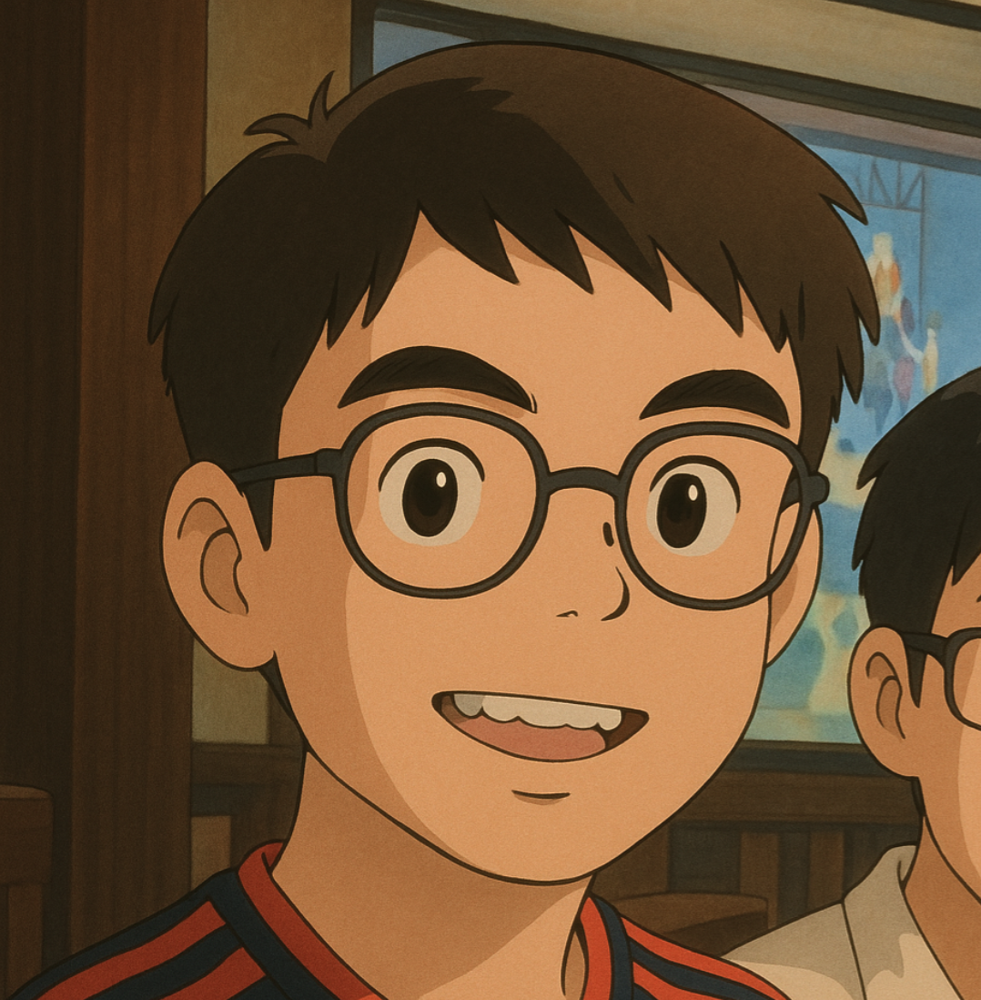

活動/最新消息


策展理念與主題
戰爭催生了獨特的建築形式，從城門、城牆到地下掩體，皆是生存與權力的具體表達。本展聚焦「門類建築」在戰爭中的角色，探討其在防禦、象徵與庇護上的多重意涵。透過歷史與現代案例，觀眾將見證這些建築如何在極端環境下孕育出空間智慧，也邀請大家思考，當戰火遠去，這些結構又如何成為記憶與反思的容器。
選擇主題的原因：近年來，全球局勢動盪，戰爭與衝突頻仍，建築空間再次成為防禦、庇護與象徵權力的重要載體。面對新的戰爭型態與人道危機，我們回望歷史中「戰爭門類建築」的演變，不僅是對人類空間智慧的致敬，也是對和平價值的深刻呼喚。本展希望在當代脈絡下，重新審視建築如何記錄戰爭的痕跡，同時啟發我們思考，在不確定的未來，空間能如何守護生命與記憶。
設計概念及細節特色
傳遞的意念
本展覽欲傳遞之核心理念在乎透過探討「門」此一象徵性結構於世界文化中之表現形式，探究人類戰爭歷史文化與建築藝術之交錯關聯，使目標受眾進一步思索門在中國與歐洲戰爭歷史中的不同表現與意義及其文化、政治、藝術等文化價值，展覽希望能夠引發目標受眾對於不同時期和地區「門」文化的反思，深入理解它們與社會變革和戰爭歷史脈絡的密切聯繫，進一步揭示「門」如何成為權力更迭與軍事歷史的物質見證，引導目標受眾思考門作為軍事節點所承載的政治宣示、疆域界定及集體記憶等功能。
教育衍生性
就教育衍生性而言，本展覽藉由「門」之主題，呈現了特定領域（戰爭相關）之中國、歐洲文化歷史表現，構建跨文明軍事史學習場域，其亦是一跨學科之學習體驗，亦即本展覽緊扣當前一〇八課綱所強調之「探索、跨域、素養」等學習方針，支持目標受眾得透過展覽多元探索、跨域學習。目標受眾得從展覽中接觸到諸如歷史、地理、建築學、社會學等多領域面向，藉多元探索，除去觀賞建築外觀等客觀事實外，進一步能針對「門」文化背後之歷史意義和文化背景進行反思，帶領觀者深入理解背後所蘊含的權力關係、民族認同與歷史脈絡，從而培養批判性與跨文化對讀之能力。
附加價值
本展覽得以突破時、地限制，同時向目標受眾展現中國、歐洲文化與各戰爭歷史時期之門的故事。透過展示多元「門」戰爭文化與各時期的歷史背景，目標受眾能欣賞不同文化與民族之建築藝術，亦能體會「門」作為歷史與文化之見證者之深遠意義。目標受眾得透過本展覽增進其跨文化之理解與對讀，廣泛吸收來自各方戰鬥歷史事件與建築美學之文化底蘊，使目標受眾進一步體會不同文化、不同背景（中國、歐洲）下的價值觀和世界觀，從而加深對世界多元性的理解與尊重，亦能拓展對建築設計與藝術表現形式的視野。
設計與架構
本展覽的總體架構將以歷史上所出現的門為核心，並將東方及西方作為兩大方向的主軸，分別展現二者文化的不同及多元性，其下再以各類文化歷史意涵藉以作為分類，如：戰爭、宗教、權力等，使觀眾可看見並深刻理解各地文化與歷史的多種面貌。
而在設計上，我們希望將整體透過層遞的方式一步步推進觀眾的認知，即以時間為軸線，在各分類中逐步地將由古至今的門文化、門歷史詳細、精實地帶出，令觀眾得以藉由橫越時空的連結，明白不同時間節點中人們對於門及其文化、歷史的意義。故整體設計會呈現一種以點連線的模式，而將整體文物展出。

線上展覽
東方門展區
西方門展區
關於我們

組長柯良運
組員張弘憶

組員王瑞渝

組員賴淯傑
組員許家薰

組員許宸研

組員許立諭

組員張嘉紋